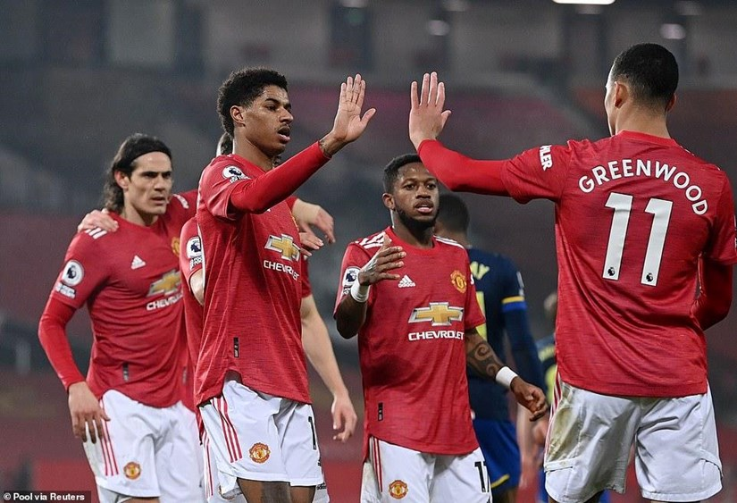
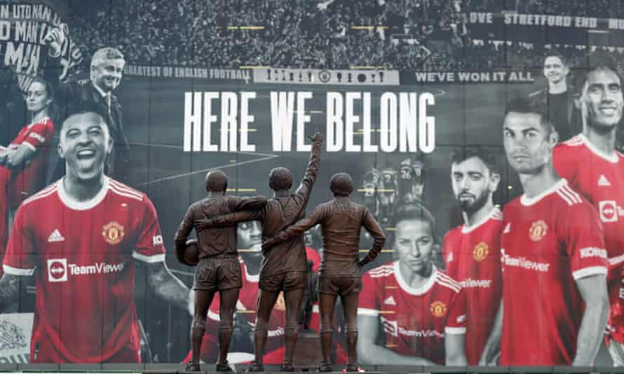

Manchester United
2017

Manchester United Football Club is a professional football club based in Old Trafford, Greater Manchester, England, that competes in the Premier League, the top flight of English football. Nicknamed "the Red Devils", the club was founded as Newton Heath LYR Football Club in 1878, changed its name to Manchester United in 1902 and moved to its current stadium, Old Trafford, in 1910.
Manchester United
Mô tả ngắn,Dec 7, 2017

Manchester United Ltd. of United Kingdom operates as a professional sports club. The Company manages the soccer team and all affiliated club activities of the Manchester United Football Club, that includes the media network, foundation, fan zone, news and sports features, and team merchandise. Manchester United is based in England.